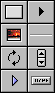
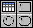
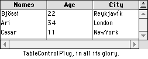

| New Controls, we welcome thee |
 In
DR2r17, a shocking addition was made: 8 (yes, 8) new controls were added to
RB's arsenal. These controls are (from left to right, and top to bottom) a placard,
a popup menu triangle, an image well, a seperator line, chasing arrows, a spin button,
a disclosure triangle, and a bevel button/menu.
These controls certainly aren't shocking additions, and all but one
of them (the bevel button/menu) had already been created as a reusable class. However,
having these as simple controls makes life a great deal easier. Instead of having
to use canvases, which appeared as blanks in the IDE, we can now see our buttons
without running the program! Hooray!
Another shocking addition in DR2 (well, not that shocking) was the #pragma
command. Technically speaking, it's not a command, but a compiler directive. This
means that when the RB compiler runs into a #pragma statement, it adjusts itself
according to what the statement says. So far, there are two uses for this.
First of all, there's the #pragma disableBackgroundTasks
directive, which does what it implies–it disables background tasks. This stops RB
from updating controls while a routine is running. For example, it won't update progress
bars, even if you set them. Why would you want it to do this? Simple: it gives you
a big speed boost.
The other directive is #pragma disableBoundsChecking, which also
does what its name implies. Normally, whenever RB runs into an array, it must check
to see if the item specified is within the array's bounds. If it's not, then you
get an OutOfBounds error. This directive disables that, and thus speeds up methods
that deals with arrays.
Back in the not-so-distant days of DR1, database support was going to be one
of the new features in "REALbasic Pro". Well, that day is now.
Using the DR2's new Database object, you can now open (and access)
databases in close to 10 different formats, ranging from comma delimited text to
4D web servers. Not only can you access all of these database formats, you can also
read from them all using the exact same classes and methods. Now that's database
support!
| Geoff chats...and we listen! |
On November 18, from 7:00-9:00 PM Eastern standard time, Geoff Perlman
and Jason Parsely (two people from REAL Software) were answering people's questions
about RB at the MacResource Hotline Server. As usual, the admins asked stupid questions,
such as "when will we be able to edit text on a cell-by-cell basis?". You
already can people! Anyway, here are the major things that we found out:
- Geoff wears briefs! (Yes, someone asked this)
- We learned what class interfaces do! (See the Tips section of this issue for
more)
- The RB application itself won't be ported to windows, as that would put REAL
Software in direct competition with Microsoft—never a good idea.
- The folks at Real SW will be hiring more engineers to help Andrew improve RB.
- A technical support phone number may be created soon, though free e-mail support
will still exist.
- Real SW is talking to Apple about a bundling deal.
Yes, it's one of the blander news titles I've had, but they're certainly
important! This new feature, which was added in DR2r25, allows you to define constants,
which are basically variables with a preset, never-changing value. There's more on
this in the tips section.
| New Sprite Engine and List Box |
The SpriteSurface and Listbox controls have received major revisions
in recent DR2 releases. Beginning with r21, the listbox is totally redone. Though
you can't see any changes, the difference is there. There aren't any major new features
with this list box though, and there still isn't a triangle button in the
top right corner that lets you reverse sort order. However, there is one useful
addition...
Also, the SpriteSurface now allows tiles and scrolling of tiles. In
the future, this will be a good way to make an interactive background, but as of
now, it's just slow.
| Documentation is on the way! |
One of the major annoyances in DR2 has been the lack of any instructions
(or even entries in the reference) on how to use all the new features. However, as
the 1.0 line is nearing its end, the folks at REAL SW have informed me that they
will indeed be updating the reference for DR2 in the near future. This update will
probably arrive sometime in December, so be on the lookout!
Realbasic, as of DR2r23, can now open all the image types supported by
QuickTime. For the record, these are PICT, JPEG, GIF, TIFF, QuickTime Image (QIF),
PhotoShop (PSD) and Windows BMP. And, to top that off, you can now save images as
JPEGs using the new SaveAsJPEG method of folderitems. You can't set the level of
compression however.
| Einhugur controls arrive! |
 Bjorn
Einhugur, who has written many, many plugins that give you access to ToolBox calls
from within RB, has venture into new grounds: plugin controls.
So far, he has written three new control plugins: TableControlPlug,
WindowSplitter, and Shapes. The TableControl plugin is a version of his popular CTableControl
class (which was reviewed in our second issue) with several new features rolled in.
The Shapes plugin is the same as the built-in RB shapes, except that they can contain
patterns, and have MouseUp and MouseDown events.
These controls are available to everyone who has registered one of
Bjorn's other plugins.
| Navigation Services, for better or worse. |
Geoff promised that Realbasic would have support for Navigation Services
(the new file dialogs in Mac OS 8.5) before 8.5 actually came out. Though this turned
out to be flat-out wrong, RB did get Nav Services support this month—25 days after
8.5 came out.
This sounds great, but quite frankly, it's horrible. If you use a file
dialog (while a program is running, or just to open a project), the next thing you
do—whether it's running the program, opening a file, or opening a code editor—always
crashes the computer with a type 10 error. And if this weren't bad enough, your file
types don't work with it! It just never displays ANY files. I find it surprising
that this version was even released with bugs this big.
However, as one of the two people in the world who actually prefers the
old dialogs, I didn't feel any grief when I disabled Nav Services. All the problems
were gone.
Here are all of the updates to RB since last issue.
| Version |
Date |
Summary |
| DR2r17 |
10/20 |
You can now set the visibility of entire folders
Eight new controls in the IDE (see news article) |
| DR2r18 |
10/26 |
Movie methods (see cover story)
Improved plugin format. |
| DR2r19 |
10/30 |
New sprite engine (See news) |
| DR2r20 |
11/6 |
#Pragma concepts
4D plugin and more database formats supported. |
| DR2r21 |
11/11 |
RB now uses Nav Services (the file dialogs in OS 8.5)
First implementation of ListBox replacement |
| DR2r22 |
11/12 |
Major Nav Services crashing bug fixed
Import Menu command added (see news)
New SaveAsJPEG method of folderitems (see news) |
| DR2r23 |
11/13 |
More image formats (all QT formats) now supported
Bug fixes with canvases and list box
Improved AutoComplete |
| DR2r24 |
11/18 |
Control Binding (see Tips)
Bug fixes to new list box |
| DR2r25 |
11/23 (?) |
Constant system introduced (see Tips)
Bug fixes |
| DR2r26 |
11/29 |
Very modified plugin format
Boolean Constants added |